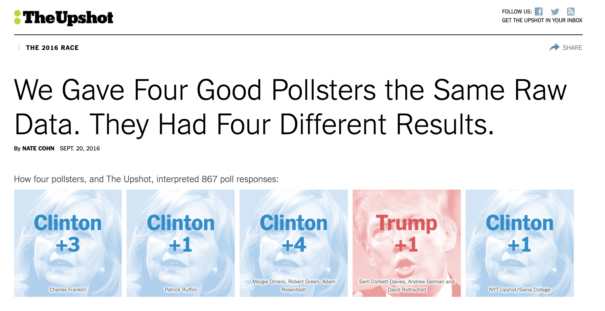

This section will provide a brief introduction to tools available in R for the analysis of survey data.
Here are some supplemental resources:
The primary survey package we will be using is from Thomas Lumley, appropriately called survey.
Recently, there has been a package srvyr that incorporates more tidyverse language. See this tutorial for details.
The Pew Research center has released a tutorial for the analysis of their survey datasets. This can be applied more generally to analyze other types of survey data.
13.1 What’s the fuss?
Let’s first discuss why we might even want special methods for analyzing survey data in the first place.
When you have survey data, oftentimes as researchers are interested in making inferences from a sample available in the survey to a broader population. However, there may be many ways in which our sample is not representative of the population. The represenativeness of a survey is one component of what is called the “total survey error” framework.
Matt Salganik’s book Bit by Bit describes this in section 3.3
In the ideal case, we would draw a simple random sample from the population using probability sampling.
Sample n units from an N population where each unit has equal probability of being sampled. We can get sample statistics very simply in this case.
For example, the simple mean of a variable measured in the sample would be equivalent to the expected value in the population.
In this estimator, we assume that all sample units \(i\) represent the same number of units in the population. When could this go wrong? Basically, almost any time we actually try to sample from a population in practice. It is very, very hard to get simple random samples of the population.
Sometimes the way survey samples are collected are through complex designs. Example:
Stratified sample of the United States
Consider each county a “strata”
Conduct a random sample within strata
Why? If you conduct a simple random sample at the individual-level, just by chance you might not not sample within each county
Clustered random sample within the United States
Consider each county
Sample \(m\) number of counties (these are considered to be “clusters”)
Sample within each cluster
When you have generated a sample using cluster or stratified sampling, it is best to account for this data generating process in the analysis to get accurate estimates for sample averages and variances. The R package we will use will account for this.
13.1.1 Weighting Surveys
In many cases, our survey data are not perfectly representative of the population. In these cases, often a researcher might want to employ weights to adjust the estimates calculated from a sample in order to make them more accurate for the population of interest.
What was the problem: Each unit \(i\) in the sample no longer represents the same number of units in the cluster, strata, or population. Some types of people might be “overrepresented” in the sample relative to the population, and some might be underrepresented.
One Solution: Weights \(w\) to reflect/ adjust for the number of units in the population that the sampled unit \(i\) represents.
What do we need? Auxiliary information about the target population so we know how to adjust the data
Where do we get this? Sometimes it is provided by survey firms or described in the codebook of existing surveys. Other times, you could consider constructing your own weights.
Example: \[\begin{align*}
\bar y &= \sum_{i=1}^n y_i*w_i\\
\end{align*}\]
When will weights matter?
Weights will matter particularly when your data are unrepresentative on characteristics that directly influence your outcomes of interest.
For example, let’s say you had a survey that was representative except for age. You had too many young people in the sample relative to the population. Let’s say you are interested in predicting the proportion of people who voted for Biden in 2020. If age did not matter for vote choice, then it might not matter that your survey was unrepresentative by age. But, if age does matter, then the unweighted estimate from your sample might be biased!
Where can weights go wrong?
Let’s be real here. Weighting is an art as much or more than a science.
It is not always immediately obvious what the target population is (e.g., if the target population is the set of people who will vote in an election).
It is not always immediately obvious how to get accurate data on this target population, even if known (e.g., not every population as up-to-date Census information).
It is not always obvious which variables to choose to weight on (e.g., which demographics?)
You may also not have all variables of interest available in your sample or at the population level.
Missing cells. Even if you have all of the above, weighting can still be insufficient if your sample simply does not contain certain subgroups of the population or contains too few members of a certain subgroup of the population. (e.g., suppose your sample only includes 18-25 year olds – it will be hard to infer things about older populations.)
For example, The Upshot gave different polling firms the same survey data. They each came up with different estimates of vote choice in 2016 due to small differences in choices about weighting and identifying the target population.The linked article describes the different choices the pollsters likely made.

13.1.2 Broad Types of Survey Sampling Techniques
Survey sampling techniques are sometimes broken into two types: non-probability and probability sampling.
In probability samples, the probability that a respondent is selected for the survey is known, and this helps ensure that the sample will be representative. However, what is becoming increasingly less known, is the probability that a person will respond to a survey. Because this is less well-known, even probability samples will need adjustments for weighting to get accurate estimates.
Non-probability samples come in many different forms, such as those that use “quota sampling,” convenience samples from online labor markets, or more sophisticated algorithms for choosing respondents that reflect the population. Pew describes different types of non-probability samples here.
Matt Salganik, as part of the curriculum for the Summer Institutes in Computational Social Science, provides a nice overview of the tradeoffs between probability and non-probability samples and what this means for survey weighting.
Pew provides a somewhat more pessimistic take on nonprobability samples in this report.
13.2 Survey R package
Let’s assume for now that we have some survey data, and those data contain some information about the sampling process, as well as survey weights. With this information, we are ready to use the survey package to conduct analysis.
The survey package by Thomas Lumley allows you to declare the nature of the survey design.
Load your dataset as usual into a dataframe in R
Construct the variables you will use in analysis
Declare to R the survey design by assigning your data frame as a new survey object.
Perform analyses using functions from the survey package
strata: Formula or vector specifying strata (NULL by default)
ids: Primary sampling unit. Formula or data frame with cluster ids. Use ~1 or ~0 if no clusters.
13.2.1 Examples of specifying svydesigns
The easiest, but also common, way to specify a survey design occurs when you have survey data and a column of survey weights that the survey firm has provided– no clusters or strata.
Let’s look at this using data from within the survey package. The apisrs represents a simple random sample with a column pw for survey sampling weights. We can specify the design below:
See also, a detailed example from Pew analyzing one of their datasets with the survey package.
Example: Sample of students in California.
library(survey)data(api) # loads several dataframes ## Sample with just weights, no clusters/stratahead(apisrs)
cds stype name sname snum
1039 15739081534155 H McFarland High McFarland High 1039
1124 19642126066716 E Stowers (Cecil Stowers (Cecil B.) Elementary 1124
2868 30664493030640 H Brea-Olinda Hig Brea-Olinda High 2868
1273 19644516012744 E Alameda Element Alameda Elementary 1273
4926 40688096043293 E Sunnyside Eleme Sunnyside Elementary 4926
2463 19734456014278 E Los Molinos Ele Los Molinos Elementary 2463
dname dnum cname cnum flag pcttest api00
1039 McFarland Unified 432 Kern 14 NA 98 462
1124 ABC Unified 1 Los Angeles 18 NA 100 878
2868 Brea-Olinda Unified 79 Orange 29 NA 98 734
1273 Downey Unified 187 Los Angeles 18 NA 99 772
4926 San Luis Coastal Unified 640 San Luis Obispo 39 NA 99 739
2463 Hacienda la Puente Unif 284 Los Angeles 18 NA 93 835
api99 target growth sch.wide comp.imp both awards meals ell yr.rnd
1039 448 18 14 No Yes No No 44 31 <NA>
1124 831 NA 47 Yes Yes Yes Yes 8 25 <NA>
2868 742 3 -8 No No No No 10 10 <NA>
1273 657 7 115 Yes Yes Yes Yes 70 25 <NA>
4926 719 4 20 Yes Yes Yes Yes 43 12 <NA>
2463 822 NA 13 Yes Yes Yes No 16 19 <NA>
mobility acs.k3 acs.46 acs.core pct.resp not.hsg hsg some.col col.grad
1039 6 NA NA 24 82 44 34 12 7
1124 15 19 30 NA 97 4 10 23 43
2868 7 NA NA 28 95 5 9 21 41
1273 23 23 NA NA 100 37 40 14 8
4926 12 20 29 NA 91 8 21 27 34
2463 13 19 29 NA 71 1 8 20 38
grad.sch avg.ed full emer enroll api.stu pw fpc
1039 3 1.91 71 35 477 429 30.97 6194
1124 21 3.66 90 10 478 420 30.97 6194
2868 24 3.71 83 18 1410 1287 30.97 6194
1273 1 1.96 85 18 342 291 30.97 6194
4926 10 3.17 100 0 217 189 30.97 6194
2463 34 3.96 75 20 258 211 30.97 6194
## Specify designapisrs_design <-svydesign(data = apisrs, weights =~pw, id =~1)
Example: Sample of students in California. Samples stratified by School type
Here is an example with a stratified random sample with a known finite population variable. Here, we had the fpc column and strata column stype. We still supply the weights pw.
## Use apistratapistrat_design <-svydesign(data = apistrat, weights =~pw, fpc =~fpc, # population of school types knownid =~1, # no clustersstrata =~stype)
Example: Sample of students in California by clustering.
Here is a more complex example.
Samples clustered by school districts dnum.
Within district, five schools were sampled snum.
Fpc for district and school are fpc1 and fpc2
apiclus_design <-svydesign(data = apiclus2, weights =~pw, fpc =~fpc1 + fpc2, id =~dnum + snum) # start from biggest clu
For more established surveys, often the codebook might include documentation on how to account for survey weights and sampling design. For example, the American National Election Study will generally include this guidance in recent codebooks. Here is an example accounting for the sampling design in the 2016 ANES.
You can use foreign, rio, or what we will use here, haven to load the .dta data.
One benefit of loading data through haven and some of the newer packages is it will help retain value labels from the original data that R might not otherwise load. (E.g., labels that would show up in SPSS or Stata but seem lost in R.)
Let’s check this for an example: “How well does feminist describe you?
library(tidyverse)an$V161346 %>%attr("labels")
-9. Refused
-9
-5. Interview breakoff (sufficient partial IW)
-5
1. Extremely well
1
2. Very well
2
3. Somewhat well
3
4. Not very well
4
5. Not at all
5
OK enough about that. Let’s specify the survey design.
anes_design <-svydesign( ids =~V160202 , strata =~V160201 , data = an, weights =~V160102,nest =TRUE)
The nest argument indicates if cluster ids should be relabeled to align with strata.
13.2.2 Working with survey designs
The good news is that once you have specified the survey design, the rest of the analysis will flow similarly across types of survey designs. The bad news is that you will need to use special functions to analyze the data instead of the functions we are used to working with. These generally start with svy….. but the good news is, they are not that different from our normal functions!
Here are a few examples of common functions using the survey design.
## Means and uncertainty of variables## Note: we put design where you would normally see datasvymean(~mobility, design = apiclus_design)
## Linear Regressionfit.lin <-svyglm(mobility ~ meals + awards, family ="gaussian",design = apiclus_design)## Logit Regressionfit.logit <-svyglm(awards ~ meals, family =binomial(link ="logit"),design = apiclus_design)
Warning in eval(family$initialize): non-integer #successes in a binomial glm!
For an example of ordinal logistic regression see section 8.6 of the course notes.
## Can also subset like normal with subset commandapiclus_design2 <-subset(apiclus_design, meals >1)
The Pew research center has also written a tutorial for using various tidyverse tools with survey data. See here for details.
In addition, there has been a package srvyr recently developed that incorporates more tidyverse language with the same set of survey tools. See this tutorial for details and some analysis examples.
Our friends the marginaleffects, prediction and margins packages have some capabilities for models fit through the survey package.
With the margins package, you will want to specify the design in order to make sure the average marginal effects reported are based on the survey design object. Example:
factor AME SE z p lower upper
meals -0.1018 0.0592 -1.7208 0.0853 -0.2178 0.0142
13.2.3 Why do we need the survey package?
The benefits of the survey package really come from the tool’s specialty in calculating appropriate variances for the survey design and accounting for very complex stratified or clustered designs. There are other weighting functions in R that will allow you to recover the same point estimates as the survey tools in some cases. However, it won’t always be the case that they will give you accurate measures of uncertainty.
If you don’t need measures of uncertainty, then other functions from base R, such as weighted.mean can also work in cases where you just have a column of survey weights.
weighted.mean(apisrs$mobility, w=apisrs$pw)
[1] 17.46
svymean(~mobility, design = apisrs_design)
mean SE
mobility 17.46 0.6529
13.3 Constructing your own weights
Sometimes you might have collected your own survey data, which you know is not representative, but no weights are provided for you.
If you think that weighting the data will be important, then you can construct your own weights! We can:
Collect information on our respondents to compare sample to population (including demographic questions on your survey)
Gather statistics on the population (e.g., Census data)
Construct weights to indicate how many units in the population each \(i\) unit in our sample should represent
One example of constructing your own weights is through a process called Raking. Here, we find weights so that the weighted distributions of your variables in your sample match the distributions of the variables in the general population very closely. How?
Decide the variables on which you want to weight your data (e.g., gender, education, age)
Find the proportion that each subgroup within these variables exist in your target population (e.g., maybe .55 women, .45 men)
Use a raking algorithm to adjust your sample data to, when weighted, reflect these distributions in the population. For example, perhaps your sample had 70% women. After raking, we would hope that when svymean is applied, you would find the weighted proportion in your data is 55%.
This R bloggers tutorial goes through an example using the survey package and function rake.
In addition, Pew has released an R package with similar weighting capabilities described here.
Raking is not the only type of weighting that is possible. Pew describes and evaluates other weighting processes here.
Several pollsters interested in measuring vote choice and public opinion have started turning to a process called multilevel regression and post-stratfication (MRP or, fondly, Mr. P).
This “multilevel” refers to the same multilevel modeling approach we discussed, using lme4. An R introduction to this is here with a companion paper here that has citations to political science examples using MRP.
The technique has been around for a long time, but now is starting to infiltrate mainstream polling in addition to political science.
See Andy Gelman’s take on it here along with a debate with Nate Silver here.